Published Aug 2009, Revised Jul 2022
曲を作りたいという人と話をしていると、
「コンプって大切だと聞くけど、正直何のために使うのかよくわからない」
「音を大きくするものらしいけど、適当に使ってみたらなぜか音が小さくなった」
といった話題をよく耳にします。もし曲作りで１つしかプラグインを使ってはいけないと言われたら、 私ならたぶんコンプレッサーを選びます。それくらい、現代の音楽作りには重要なツールです。
そこで、重要なポイントだけ超わかりやすくまとめてみました。 そもそもコンプレッサーを使ったらなにが嬉しいのかを、 難しいパラメータ等をひとまず無視して実戦的に説明してみようと思います。
オーディオ全般に通用する話ですが、特に DTM でポップス曲をミックスする初心者の方へ向けて書かれています。 また、歌ってみたなどでオケにボーカルを乗せたい時も参考になるでしょう。
音の素材は「ノーマライズされている」のが基本です。ノーマライズ済みとは、言い換えると 「その音素材（ファイル）の最もレベルの高い位置が 0db」になっている状態のことです。 波形編集ソフトで開いてみると、ノーマライズされているかどうかは一発でわかります。
ノーマライズは日本語で「正規化」や「標準化」みたいに書かれることがありますが、同じことです。
言葉にすると難しく感じますが、単純に、天井ギリギリまで信号レベル（音量）を上げることです。
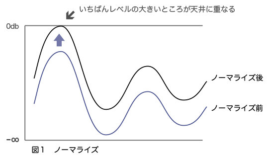
波形編集ソフトがあれば、「ノーマライズ」機能で「0db」または「100%」を選べば一発で完了です。 DAW によってはその機能もついていますね。
参考までに、 Audacity での例を挙げておきます。
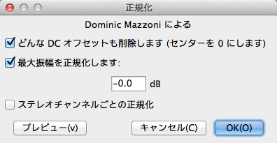
DTM などでミックスする場合、必ず自作の音素材（たいていボーカルやギターでしょう）には、 あらかじめノーマライズをかけるようにしましょう。全素材の基準が揃うことになるので、のちのち調整がやりやすくなります。
なお、プロが作った素材（DAW 付属の音源や素材集）はたいてい、あらかじめノーマライズされているので、特に気にする必要はありませんよ。
今回の話は、次の２つの目的を併せて進めていきます（なにせ「実戦的」だからね）。
１．音をクリップさせずに大きくする
２．ある楽器のパート（今回はボーカル）を聴きやすくする
例として、次のように単純化した曲のイメージ図を用意しました（横軸は時間の流れです）。 あなたは、ポップス曲に歌を入れたいと思い、とりあえずオケにボーカルトラックを追加してみました。
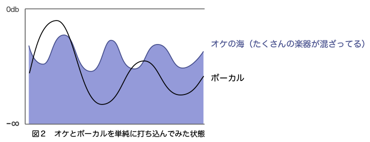
鳴らしてみると、「ボーカルの音がオケに埋もれてしまっているなぁ・・」と思うはずです（思って下さい）。
あなたは、「そうだ！ とりあえずボーカルのレベル（音量）を上げればいいんだ」と考えるはずです（よね？）。 では、DAW のフェーダーをいじって、ボーカルのレベルだけ上げて、目立たせてみましょう。
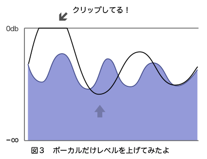
うん、確かにボーカルがはっきり聞こえていい感じ・・。 ところが！ サビの部分など、ところどころでボーカルの音がクリップしてしまいました（＝音が割れた）。
DAW のマスターチャンネルで、クリップしたことを示す赤い表示（この例では 1.8db オーバー）が出ています。
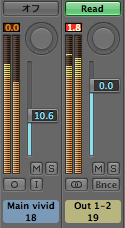
音の信号は絶対に 0db より大きくはならないので、無理矢理大きくした部分が歪（ひず）んでしまいます。 「え、音って無限に大きくなるんじゃないの？」確かに現実世界の音はそうですね。 でも、機材や PC が扱う「電気信号（をデジタル化したもの）」はデータ量が決まっているので、無限の情報は詰め込めないんですね。
となると問題は、「音のレベルはできるだけ上げたいけど、クリップはさせたくない！」となりますよね？ そこで、ボーカルトラックにコンプをかけます。
コンプは２段階で作用します（ここ重要）。
【第１段階】レベルの大きい部分を、引き下げる（音をつぶす、だからコンプレッサー）
ある一定以上のレベルの部分を、「山の形を保ったまま」圧縮していきます。山が小さくなればなるほど、 「コンプを深くかける」とか「音をしっかりつぶす」といった言い方をします。 乱暴に言ってしまえば、ところどころ目立ちすぎている部分を抑えるわけですね。
【メリット】音の最大レベルと最小レベルの差（＝ダイナミックレンジ）が小さくなるので、聴き取りやすくなる （つまり、耳にストレスがかからない）。ラジオなんかの音声も、笑い声からささやき声まで全般的に聞き取りやすい ようにかなり深くかけてるようですね。
【デメリット】つぶしすぎると躍動感のないのっぺりした音になりますが、逆にそのほうが都合がいい音楽ジャンル・楽器・音素材もあります。
では、元のオケにそのまま単純に重ねて見てみましょう。こんな感じですね。
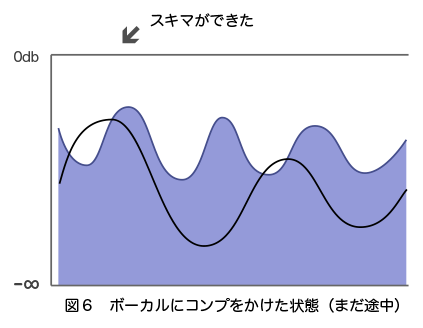
「えっ、これだとますますボーカルが埋もれちゃったじゃん！ むしろ音が小さくなっちゃったよ！」
ええ、確かにその通り。しかし！「前より天井（0db）との間のスキマが広がっている」ことに着目して、次に・・。
【第２段階】コンプをかけたボーカルトラック全体を持ち上げる（レベルを上げる）
DAW のフェーダーで、ボーカルトラックのレベルを上げてみます。
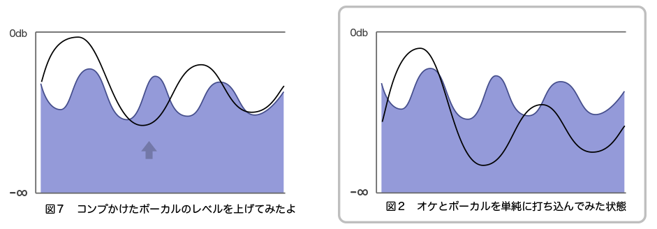
すると・・ なんということでしょう！ クリップさせずに、ボーカルの音だけ大きくすることができたではありませんか！ （右の図２と比較しよう）
以上、２つの作業をコンプはいっぺんにやってくれます。便利ですね。
コンプを積極的に使えば、「音を整理」できるようになります。特定の音を自在に目立たせて立体感（奥行き）を出すことができるわけですね。 コンプの世界はとても奥が深く、「音作り」にも積極的に利用されます。 アタックを削ったりといった用途にも使用できます。プロは数十万円以上する機器を使うほど、重要なのです。
ちなみに、チャンネルに挿す場合のイコライザー（EQ）との順番ですが、「EQ → コンプ」と「コンプ → EQ」のどちらもあり得ます。 「EQ → コンプ」のほうが多数派のようですが、私はたいていコンプ → EQ にするほうがコントロールしやすいように思います。 ジャンル・楽器や好みによっても変わるようですから、自分の耳を信じるのみ、ですね。
ちなみに、よく「この曲は音圧が高いな」という言い方をしますが、全体的にコンプをガリガリに強くかけて、 多くの音を 0db に近づけた曲をそう表現します。波形の形から、「昆布」とか呼ばれます。それを通り越して真っ黒になると「海苔」に変わります。
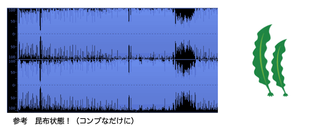
コンプと同じくらいリミッターは重要です。 というか実はこの２つ、機能的には同じ仲間で、大きくみると「リミッターはコンプの特殊な使い方の１つ」と見なせます。
円は楕円の特殊な状態、というのに似ていますね。
リミッターは、有無を言わさず指定したレベルまでぶっつぶして、ぴったりそのレベルに合わせてしまいます。
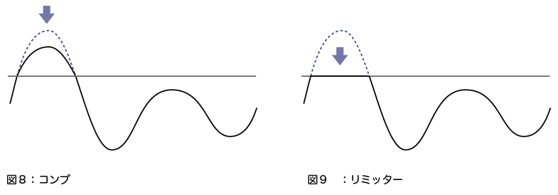
用途としては「絶対にクリップして欲しくない時」に使うツールです。なので、マスターチャンネルにはふつう必ず挿します。 たいてい、0db （や -0.1db）あたりに設定して、音の出口（プラグインのチェインの最後）に挿します。 それからエレキギターなど、ときどき高いピーク（音のレベルがとりわけ高い部分）が出やすい素材にも使ったりします。
ちなみにコンプを使っても設定次第で（ほぼ）同じ効果が得られますが、利便性のためと、音作りの用途の違いのために、別のプラグインという扱いになっているわけです。
コンプは指定した圧縮率に沿って、山の形を保ったままゆるやかに圧縮しますが、リミッターは過激です。 そのぶん、リミットがかかった前後はわりと不自然になりがちです。なので、音作りの道具としてはあまり使われません。 言ってみれば、コンプは「攻めのツール」、リミッターは「守りのツール」です。
また、コンプとリミッターを同時に使うこともよくあります。というか、ヘンな話ですが、 例えば私が使っているコンプには、コンプの中にリミッター機能があります（ややこしい）。
より積極的な使い方をする例としては「マキシマイザー」や「ファイナライザー」といった別のエフェクトとして扱われます。
今回はボーカルを例にとりましたが、全ての楽器で同じ事が言えます。
「音を前に出す（目立たせる）」にはコンプが必須です。ポップスなどは音がたくさん鳴っているので、 ボーカルやリード楽器（ギター・鍵盤など）を音の海から目立たせる必要があります（＝メリハリをつける）。
「音を目立たせる」ことは、単純に「音のレベルを上げる」ことではないということを感じて頂けたなら、幸いです。 次の段階として、楽器ごとにパラメータを変えたり実験をしてみるとよいでしょう。
コンプありと無しでどれくらい印象が変わるのかの参考に、短い音源を用意してみました。 私もそんなに使いこなせていませんし、ミックスは勉強中なのでお遊びとしてひとつヨロシク。
両方ともノーマライズを１００％（0db に合わせて、つまり最大限）かけてあります。 ポップス曲としては、それほどコンプをかけていない部類に入るので、少しわかりにくいかもしれません。 できればヘッドホンでどうぞ。
【コンプなし】すでに完成している曲からコンプ類をオフにして、バランスを調整しなおしてみました。
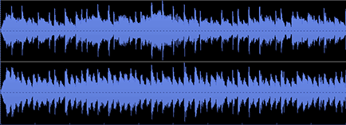
【コンプあり】オリジナルのものです。
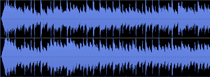
いかがでしょうか？ コンプ無しだとやはりキツいですね、これくらいが限界です。それだけ単体で聴いてみると わりと違和感ないというかそれなりなのですが、聞き比べるとだいぶ印象が変わることがわかると思います。
コンプ無しのものは、なにか手前に壁があるように感じませんか？ 音自体はクリアなのに・・。 コンプを使うと、特定のトラックの「音を前に出す」ことによって、立体感を持たすことができるわけですね。